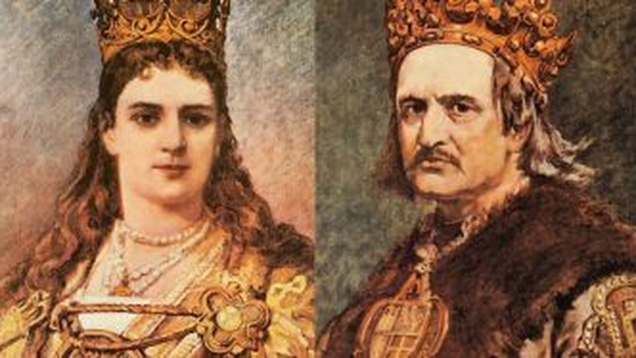

Polska i Litwa po unii w Krewie
W 1385roku Polska i Litwa podpisały układ w Krewie. Od tego czasu oba kraje pozostawały w unii personalnej – czyli miały wspólnego władcę. Na tronie polskim i litewskim zasiadali władcy wywodzący się z dynastii Jagiellonów. Oba państwa zachowały odrębne urzędy i instytucje państwowe. Szlachta litewska z zazdrością spoglądała na przywileje szlachty polskiej. Jednak najmożniejsi panowie litewscy niechętni byli ściślejszej unii, ponieważ obawiali się utraty pozycji na Litwie. Oni rządzili księstwem, gdy król przebywał w Polsce.
